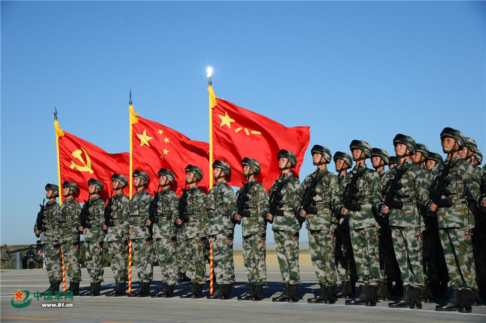

三湾改编是中国共产党历史上的一次重要事件，具有深远的历史意义：
通过"支部建在连上"的制度，中国共产党确立了对军队的绝对领导地位。这一制度从根本上改变了旧式军队的性质，使人民军队成为党领导下的革命武装力量。
三湾改编通过实行官兵平等、民主管理等制度，创建了一支新型的人民军队。这支军队不再是旧式的雇佣军或军阀部队，而是为了人民利益而战的革命军队。
官兵平等的制度极大地提高了士兵的积极性和主动性，使军队的凝聚力和战斗力得到了显著增强。士兵们认识到自己是军队的主人，愿意为革命事业而奋斗。

三湾改编为中国革命的胜利奠定了坚实的基础。通过这次改编，中国共产党拥有了一支坚强的革命武装力量，为后来的井冈山革命根据地的建立和发展提供了重要保障。
毛泽东在三湾改编中提出的"支部建在连上"、官兵平等、民主管理等原则，丰富了马克思主义军事理论，为中国特色的军事理论体系的形成做出了重要贡献。
三湾改编是中国共产党建设新型人民军队的重要开端，它的历史意义将永远铭刻在中国革命的史册上。